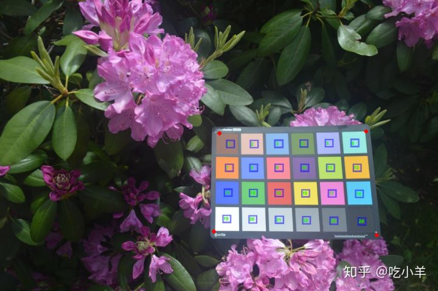
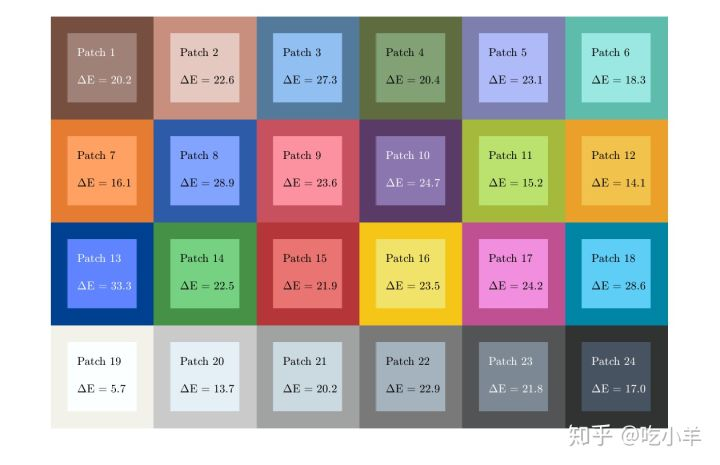

Home
本示例说明如何使用CIE94标准计算测量色和参考色的色差。默认情况下，measureColor函数使用CIE76标准计算测试图上测得的颜色和参考颜色之间的色差。您可以使用imcolordiff函数通过CIE94或CIEDE2000标准计算色差。
将X-Rite®ColorChecker®图表的图像读取到工作区中。
I = imread('colorCheckerTestImage.jpg');
创建一个colorChecker对象，然后显示带有ROI批注的图表。
chart = colorChecker(I); displayChart(chart)

测量每个色标ROI中的颜色，然后在表colorTable中返回测量值。Delta_E表格变量中的色差测量结果遵循CIE76标准。
colorTable = measureColor(chart);
在色块图上，显示测得的颜色和参考色，并在每个色块上叠加相应的CIE76色差。
displayColorPatch(colorTable)

将参考值L * a * b *和测量的RGB颜色值提取到表格中。
referenceLab = colorTable{:,{'Reference_L','Reference_a','Reference_b'}};
measuredRGB = colorTable{:,{'Measured_R','Measured_G','Measured_B'}};
将测量的RGB颜色转换为L * a * b *颜色空间，并指定D50白点。
measuredLab = rgb2lab(measuredRGB,"WhitePoint","d50");
使用imcolordiff函数计算色差，指定颜色确保测量值在L * a * b *颜色空间中。默认情况下，此功能使用CIE94标准计算色差。
dE = imcolordiff(measuredLab,referenceLab,"isInputLab",true);
使用新的色差测量值创建新的色表。
colorTable94 = colorTable;
colorTable94{:,"Delta_E"} = dE;
在色块图上，显示测得的颜色和参考色，并在每个色块上叠加相应的CIE94色差。
displayColorPatch(colorTable94)
======================================================================
我的测试结果及程序
下面是我测试的代码：

注：本文根据MATLAB官网内容修改而成。